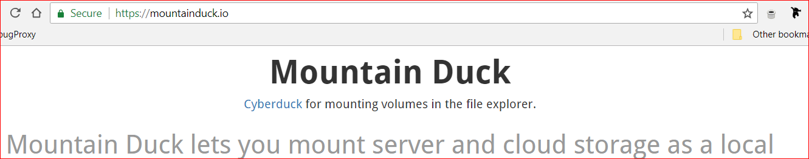
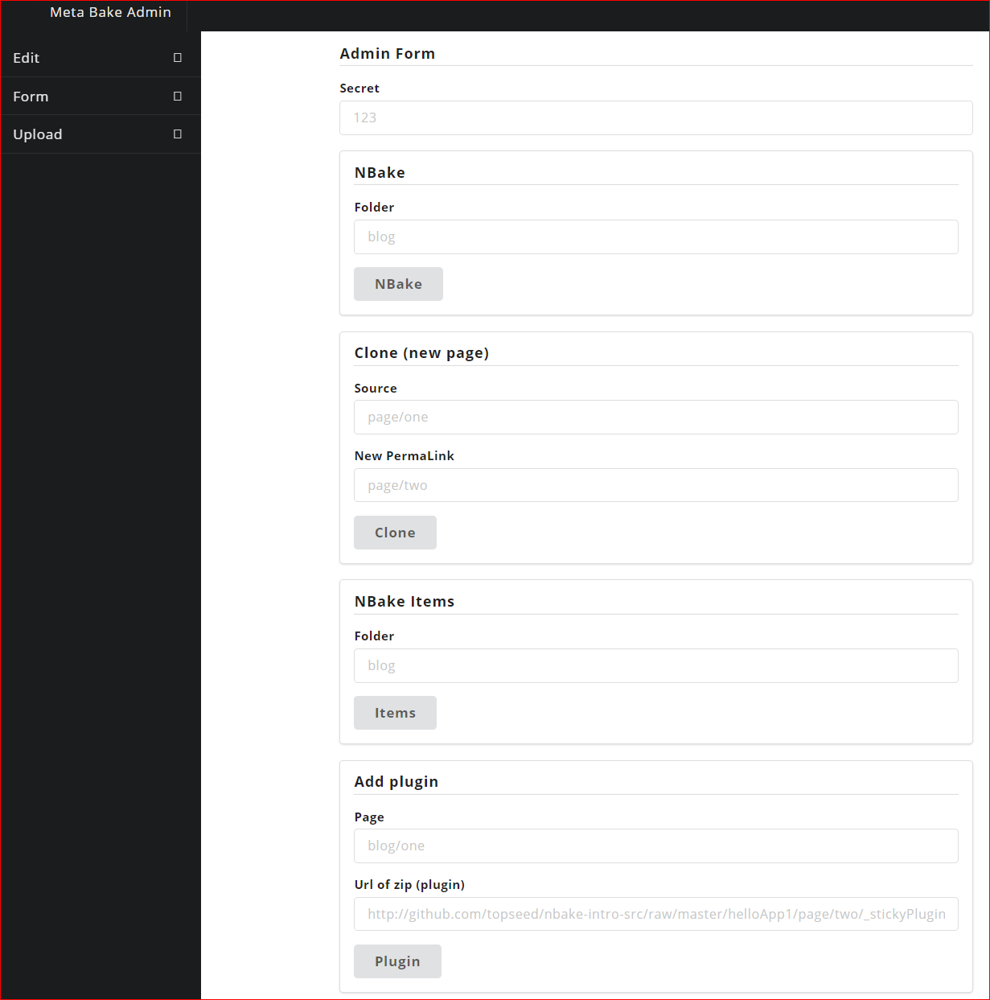
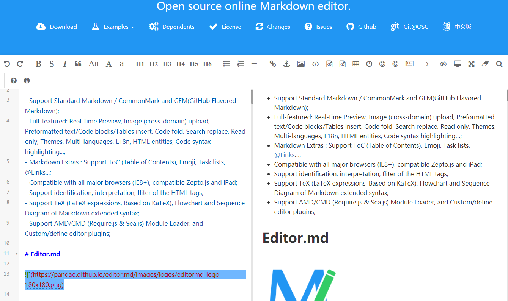
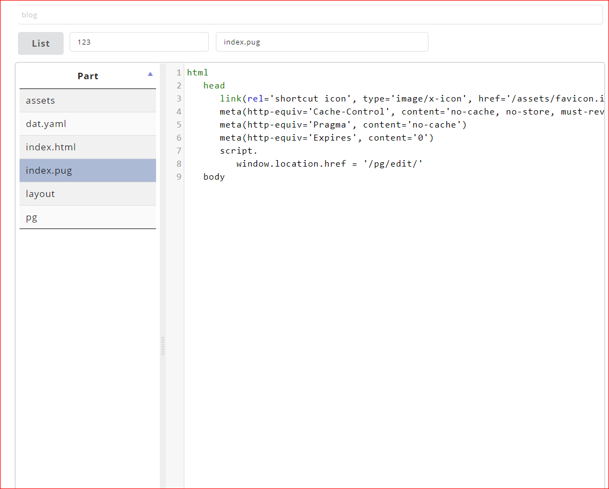
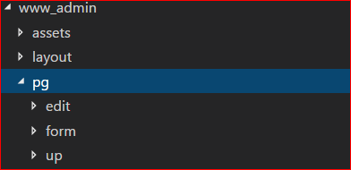
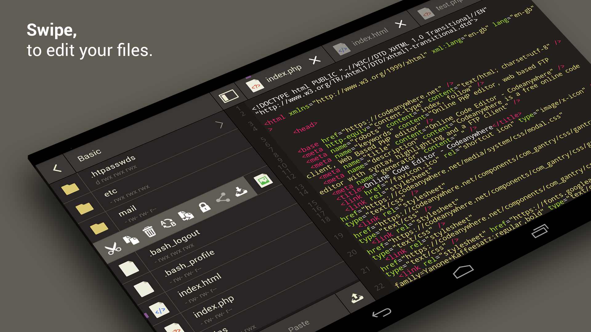

Popular platforms have an Admin Screen.

Best practice: BUild server in the cloud

Even when you go 'static/PWA'
Since you files are static (and no http server)
Mount, there is a dozen ways. Mount from your build server.
Meta build: Your build API in the cloud!
Remote friendly! via CURL.
Extends a typescript class.

If you know markdown, how much harder is pug?
Every company should blog, have admin and build server.
If you know markdown, how much harder is pug?
It's just pug, you can customize.
Or clone.
You should embrace docker.

Get a preconfigured image.
Remote Friendly. WebIDE. Group dev environment.

Tons of benefits.
Code Anywhere. To a mounted drive.
